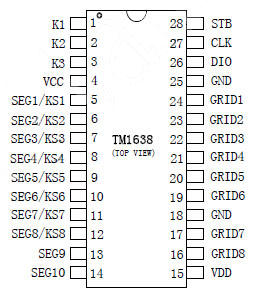
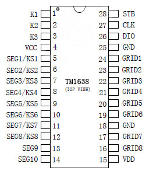

|  |
Erriez TM1638 library for Arduino
1.1.0
TM1638 button and LED controller library for Arduino
|
|  |
Erriez TM1638 library for Arduino
1.1.0
TM1638 button and LED controller library for Arduino
|
This is a 3-pin serial TM1638 chip library for Arduino, optimized for size and speed. It supports a combined LED driver controller and key-scan interface to detect multiple key presses at the same time.

Displaying numbers, characters and reading keys depends on the hardware wiring and is not part of this library. A fully operational example for a board with 8 7-segment displays, 8 dual color LED's and 8 buttons which uses this library is available here: JY-LKM1638.
Connect power and 3 data pins to an Arduino board DIGITAL pins:
The following TM1638 pins should be connected to LED's and buttons in a matrix:
| Pin | TM1638 | Arduino UNO / Nano / Micro / Pro Micro / Leonardo / Mega2560 | WeMos D1 & R2 / Node MCU | WeMos LOLIN32 |
|---|---|---|---|---|
| 1 | VCC | 5V (or 3.3V) | 3V3 | 3V3 |
| 2 | GND | GND | GND | GND |
| 3 | CLK | 2 (DIGITAL pin) | D2 | 0 |
| 4 | DIO | 3 (DIGITAL pin) | D3 | 4 |
| 5 | STB0 | 4 (DIGITAL pin) | D4 | 5 |
Arduino IDE | Examples | Erriez TM1638 button and LED driver:
Initialization
Display on/off
Turn all LED's off
Get keys
Write Byte to display register
Write buffer to display registers
Measured with Arduino IDE v1.8.5 without any other peripherals, calling all library functions once:
| Board | MCU flash size | MCU RAM size | TM1638 library flash | TM1638 library RAM |
|---|---|---|---|---|
| Arduino UNO | 32kB | 2048kB | 1840 Bytes | 40 Bytes |
The library uses optimized pin control for AVR targets. Other targets uses the default digitalRead() and digitalWrite() pin control functions.
Output Benchmark example:
| Board | CLK | Read keys | Write Byte | Write 16 Bytes buffer | Clear display |
|---|---|---|---|---|---|
| Pro Mini 8MHz | 65kHz | 736us | 312us | 2448us | 2224us |
| UNO 16MHz | 125kHz | 340us | 152us | 1192us | 1176us |
| WeMos D1 & R2 80MHz | 200kHz | 284us | 116us | 683us | 682us |
| WeMos D1 & R2 160MHz | 300kHz | 223us | 66us | 474us | 469us |


Please refer to the Wiki page.
 1.8.11
1.8.11